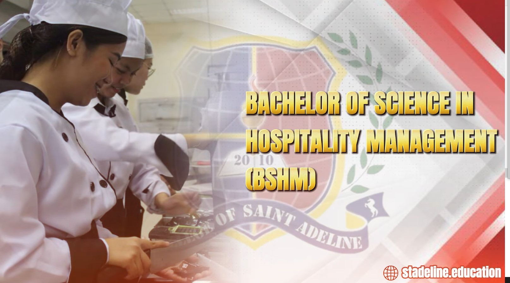
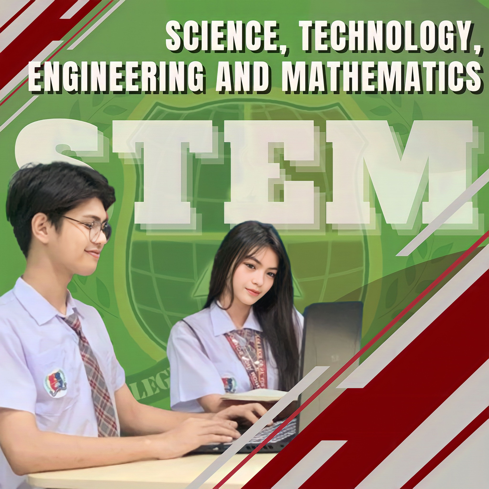

Programs
College
BSIT (Bachelor of Science in Information Technology)- Software Developer
- IT Support Specialist
- Systems Analyst
- Network Administrator
.jpg)
A four-year degree program that focuses on computing technology and its applications. It covers programming, networking, databases, and software engineering.
Common Careers:- Administrative Assistant
- Office Manager
- Executive Secretary
- Records Clerk
.jpg)
Prepares students for admin and clerical roles in offices. Covers management, records, and communication.
Common Careers:- Tourism Officer
- Travel Agency Manager
- Tour Guide
- Cruise Line Staff
.jpg)
Focuses on tourism planning, marketing, and management. Explores cultural heritage and destination management.
Common Careers:-

- Hotel Manager
- Restaurant Supervisor
- Events Coordinator
- Travel Consultant
Focuses on hotel, restaurant, event planning, and customer service operations with hands-on experience.
Common Careers:Senior High School
- Teacher
- Lawyer
- Journalist
- Social Worker
.jpg)
For students into literature, history, philosophy, and social science. Builds thinking, speaking, and writing skills.
Career Pathways:- Chef
- Entrepreneur
- Fashion Designer
- Hotel Staff
Part of the TVL track, focused on cooking, baking, sewing, and hospitality. Great for aspiring entrepreneurs or service workers.
Career Pathways:-

- Engineer
- Doctor
- Scientist
- Architect
Preps students for careers in engineering, medicine, and other science/math-related fields.
Career Pathways:- Accountant
- Business Manager
- Entrepreneur
- Marketing Specialist
Covers business, marketing, and finance. Great for future entrepreneurs and business leaders.
Career Pathways:- Teacher
- Administrative Assistant
- Architect
- Open to any college course

A flexible strand for students exploring various fields in humanities, sciences, and business.
Career Pathways: